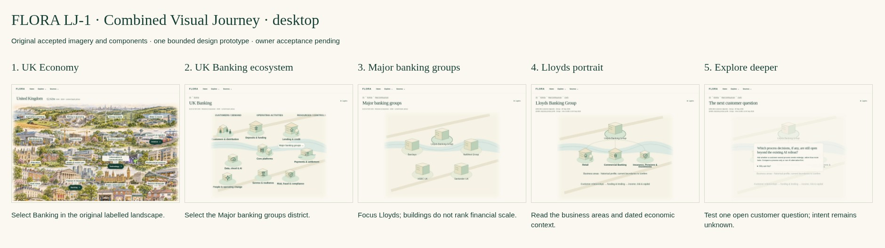

One visual Banking journey.
Design-only prototype · original accepted FLORA foundation · owner acceptance pending.
Start at UK Economy → · Review storyboard and evidence limits

- UK Economy · Desktop preview
- Banking ecosystem · Desktop preview
- Major banking groups · Desktop preview
- Lloyds portrait · Desktop preview
- Explore deeper · Desktop preview


No live account, API, commercial data or Pipeline operation. Named relationships require existing evidence.